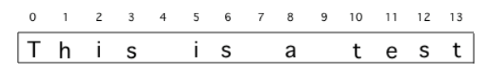

Part 1: Find and Replace with while
Loops are often used for String Traversals or String Processing algorithms where the code steps through a string character by character.
In previous lessons, we learned to use String objects and built-in string methods to process strings.
In this lesson, we will write our own loops to process strings.
Remember that strings are a sequence of characters where each character is at a position or index starting at 0.

The first character in a Java String is at index 0 and the last character is at length() - 1, so loops processing strings should start at 0.
int length() returns the number of characters in a String object.int indexOf(String str) returns the index of the first occurrence of str or -1 if str is not found.String substring(int from, int to) returns the substring beginning at index from and ending at index to - 1.String substring(int from) returns substring(from, length()).Note that s.substring(i,i+1) returns the character at index i.
indexOf controls the loopA while loop can be used with the String indexOf method to find certain characters in a string and process them, usually using the substring method.
parsonsprob:: removeATextbook prompt: The following program removes all the a’s from a string, but the code is mixed up.
Drag the blocks from the left area into the correct order in the right area.
parsonsprob:: removeAparsonsprob:: removeApublic static void main(String[] args)
{
String s = "are apples tasty without an a?";
int index = 0;
System.out.println("Original string: " + s);
// while there is an a in s
while (s.indexOf("a") >= 0)
{
// Find the next index for an a
index = s.indexOf("a");
// Remove the a at index by concatenating
// substring up to index and then rest of the string.
s = s.substring(0,index) +
s.substring(index+1);
} // end loop
System.out.println("String with a's removed:" + s);
} // end methodGoogle has been scanning old books and then using software to read the scanned text.
But, the software can get things mixed up like using the number 1 for the letter l.
The following code loops through a string replacing all 1’s with l’s.
Trace through the code below with a partner and explain how it works on the given message.
activecode:: string-replace1Textbook prompt: Change the code to add code for a counter variable to count the number of 1’s replaced in the message and print it out.
Change the message to have more mistakes with 1’s to test it.
activecode:: string-replace1public class FindAndReplace
{
public static void main(String[] args)
{
String message = "Have a 1ong and happy 1ife";
int index = 0;
// while more 1's in the message
while (message.indexOf("1") >= 0)
{
// Find the next index for 1
index = message.indexOf("1");
System.out.println("Found a 1 at index: " + index);
// Replace the 1 with a l at index by concatenating substring up to
// index and then the rest of the string.
String firstpart = message.substring(0, index);
String lastpart = message.substring(index + 1);
message = firstpart + "l" + lastpart;
System.out.println("Replaced 1 with l at index " + index);
System.out.println(
"The message is currently "
+ message
+ " but we aren't done looping yet!");
}
System.out.println("Cleaned text: " + message);
}
}activecode:: string-replace1Runestone’s original trace output for the starting message is:
Found a 1 at index: 7
Replaced 1 with l at index 7
The message is currently Have a long and happy 1ife but we aren't done looping yet!
Found a 1 at index: 22
Replaced 1 with l at index 22
The message is currently Have a long and happy life but we aren't done looping yet!
Cleaned text: Have a long and happy lifeThe test expects the final submitted output to be different because the prompt asks you to add a counter and change the message to have more 1 mistakes.
indexOf as the loop test for repeated find-and-replaceindexOf("a") >= 0 or indexOf("1") >= 0 to keep searching while a target remainssubstring(0,index) and substring(index+1) to remove a characterindexOf search can find the next occurrence after the string changes